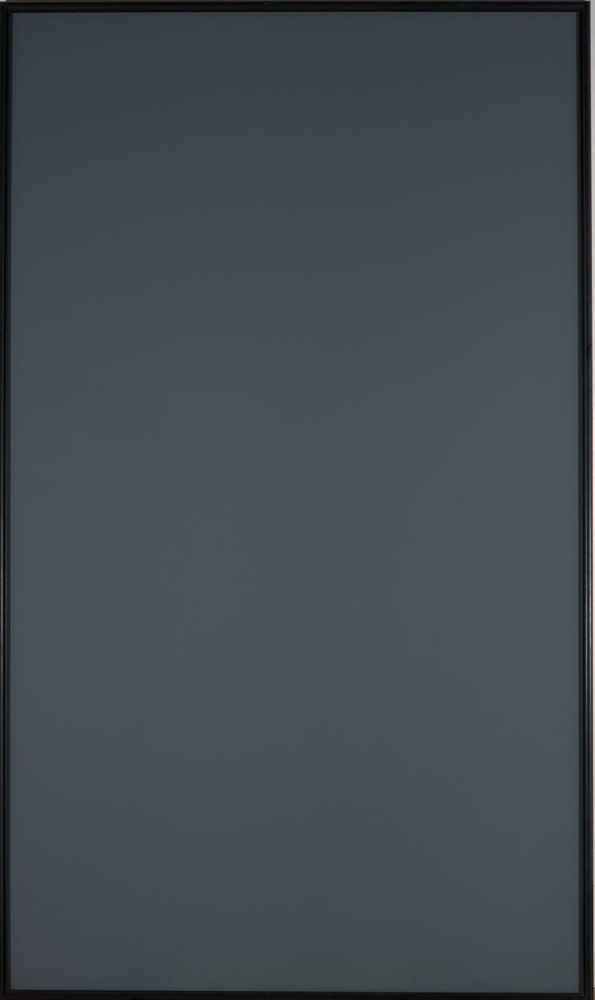

Research in Conversation · MLL Colloquium
Richter’s Grey, the Machine’s Em Dash — and What Makes Us Us
Tommie Juzek
Florida State University · 1 October 2026
Gerhard Richter
Anyone can paint a canvas grey.
When Richter painted his canvases grey, it was out of a crisis: he did not know what was left to paint.
The pictures, he said, began to teach him. paraphrase: check in Text (2009)
This one is a mirror painting: Spiegel, Grau, 1991, grey pigment on glass.
Many in the academy know the feeling now
Is the machine good? For me, that is settled.
“The argument in this paper was entirely found by ChatGPT Pro 5.5.”
A question open since 1996 (Benjamini and Schramm); four pages, May 2026; unrefereed pending
“short and particularly elegant”
Hugo Duminil-Copin, 30 August 2026
A problem that had thwarted her group for years; ChatGPT resolved it in a few minutes.
Alyssa Goodman’s spiral-arm map, as reported in Science, 4 June 2026 pending
People I know listen mostly to AI-generated music.
97% could not pick out the AI track in a blind test; 80% want it labelled.
Deezer and Ipsos survey, 9,000 adults, October 2025 (vendor figures) pending
The cost
Everything is being flooded.
We are overwhelmed:
understanding cannot keep up with production.
Not new, says Gordon Erlebacher: only worse, by an order of magnitude. paraphrase: check with him
Two halves of one college
AI’s impact on the academy has two sides.
Both are being flooded, and we are left asking what pursuing them is about.
“If all we really wanted was to know how the Universe worked, we would start a hedge fund … Thus anyone working in astrophysics is someone who wants to do astrophysics, not someone who wants to learn the answers; there are way more efficient ways to learn the answers.”
David Hogg, “Why do we do astrophysics?”, arXiv, 10 February 2026 (preprint); quoted in Science, 4 June 2026
People are in the field for the doing, not to be told the outcome.
What is left to write?
A question for you, and for the conversation.
—
In my work, I approach AI from several angles:
what it is doing, why it is doing it, and how it affects society.
Here, I focus on a single mark.
One mark, all the way round
Human convention: the mark was always ours
There is no single human rate: Sterne and Hemingway are a hundred times apart.
One Gutenberg edition per work, counted like the models’ text; a doubled dash counts once. Quick and indicative.
Model behaviour: the rise and the return
The flagship came back to the human rate, indistinguishable from it; the small tier went the other way.
In science, where human writers barely use it
GPT-5.4: 2 and 1 dashes in about 23,600 tokens, inside the grey. Consistent with a deliberate correction; intent is unprovable. counts pending
The tell moves
AI tell-tales come and go.
Solid: OpenAI’s flagship models continuing news articles, 20,000 to 100,000 each, counted by us; each word against its own peak. Dashed: the em dash from the runs of slides 9 and 10; delve not yet measured there.
The reference problem
More than which humans?
From this, and from the previous human-author results: “there’s an em dash, therefore this is AI” has no definite denominator.
Why? Mechanisms
Per million tokens · science continuations · 42,000 items per model
Tokenizer? Ruled out: GPT-4o and GPT-4.1 share one and differ about 30 times.
Preference training? The recipe decides: four families up, two down.
Rewarded format. Preference models favour lists, links, bold text and emojis (Zhang et al., ACL 2025). The em dash may be one more.
Markdown? A preprint’s idea: testable, and we are building the test. work in progress
Where does it come from? One open model, stage by stage
In the post-training data, the dashes come with ChatGPT’s answers, and preferred answers carry fewer than rejected ones. work in progress
OLMo-2 (Ai2) publishes every stage’s training data; counted by us, 29 September 2026: pretraining from 93 sampled shards (a whole-corpus count agrees within 1%), post-training in full. About a tenth of the chat data’s dashes are the Chinese double dash.
The same stages, in one model’s own writing: OLMo-2 1B
Writing freely, it starts below people; the preference step takes it past them. work in progress
OLMo-2 1B (Ai2), four released checkpoints, each continuing the same 10,000 news articles (first halves), sampling from its own probabilities, first 40 words; whiskers are 95% intervals. Always taking its likeliest next word instead, it writes a tenth as many. Counted by us, 29 and 30 September 2026.
The same stages, in a bigger model: OLMo-2 7B
The preference step pushes the dash up sharply.
It can overshoot people, as at 1B, but need not, as at 7B. work in progress
OLMo-2 7B (Ai2), four released checkpoints run compressed to 4 bits, each continuing the first 5,000 of the same news articles, sampling from its own probabilities, first 40 words; whiskers are 95% intervals. Over 200 words the preference-tuned model does pass people: by a third at 7B; at 1B it doubles their rate. Counted by us, 30 September 2026.
The same writing, closer up: the dash’s form
People writing news space the dash; after training, the model mostly closes it up. work in progress
Share of em dashes closed up rather than spaced, first 40 words: the same 10,000 news articles, and OLMo-2 1B’s continuations of them, sampled from its own probabilities. OLMo-2 7B does the same: 33% after pretraining, 83% at the end (on the first 5,000 articles, whose writers close up 15%). Counted by us, 30 September 2026.
Placeholder · the trace
House styles, not a language
Within one 2026 cohort, contractions range from about 1,200 to over 30,000 per million (§4.1): Rudnicka’s idiolects. “AI language” is the wrong noun.
From heuristic to accusation
7,806 entries to one prize
At a 0.5% false-positive rate, about 39 innocent stories are flagged.
With 2% AI entries and 95% caught, one flag in five is wrong.
At 1% and 1%: a coin flip.
The flag is not the verdict
Two prizes, two flags
„… wer das Buch liest, kann sich nur wundern über dessen Fürsprecher.“
Niklas Bender, Frankfurter Allgemeine Zeitung, 28 September 2026. On the prose, AI or not: „komplett missraten“.
The loop closes
Writers strip the mark
“When I write ‘delve,’ I change it. It has this stigma now.”
Zina Ward, co-author of the delve paper, in Laura Yuen, Minnesota Star Tribune, 4 December 2025
My own grant documents follow a zero-em-dash convention. On purpose.
Do we pick up the machine’s words? In unscripted speech, they rise; the cause is open (Anderson, Galpin and Juzek, AIES 2025). Association, not causation.
Beyond the mark: meaning
“Does money lead to happiness?”
About 100 US adults, one essay each; GPT-4o judged each essay’s stance.
Without AI, two in five essays took no side; when the AI wrote much of it, two in three.
In a second test, asked only to fix the grammar, the models still moved the meaning.
And what the machines write, we all read.
Abdulhai, White, Wan, Qureshi, Leibo, Kleiman-Weiner and Jaques, “How LLMs Distort Our Written Language”, arXiv 2603.18161, v2 August 2026 (preprint): Figure 6, redrawn. The AI assistant was assigned at random; how much to use it, people chose. The grammar test: 86 essays written in 2021.
Circling back
Can alignment be achieved, even in literature?
Literary quality is measurable, and crowd and expert judgements come apart (Bizzoni et al. 2023; Feldkamp et al. 2024).
What is left to write?
Over to the conversation.
With Joachim Adams and Susan Bryson
How these slides were made
Tommie Juzek set the argument, the running order and the substance; the numbers come from his group’s research data and the cited sources, and any not yet logged in his evidence file are tagged pending. Claude (Anthropic’s Opus) built this page from his notes and direction, drew the figures from those numbers, and drafted the slide text. draft v0.4, before Tommie’s edit
Image: Gerhard Richter, Spiegel, Grau [Mirror Painting (Grey)], 1991, pigment on glass. © Gerhard Richter. ARTIST ROOMS National Galleries of Scotland and Tate. Photo: Antonia Reeve. nationalgalleries.org/art-and-artists/89110
Type: Newsreader and Inter (SIL Open Font License). Slides: reveal.js (MIT). Numbers and sources: the two slides after this one.
Every number on these slides
| Number | What | Source |
|---|---|---|
| 40,617 to 389 | em dashes per million tokens: Sterne’s Tristram Shandy to Hemingway’s The Sun Also Rises (one Gutenberg edition each; quick) | §19 |
| 1,078 | em dashes per million tokens, human news (CC-News) | §2.2 |
| 0.0 | human news (WMT): 0 in 91,317 tokens, below 33 per million | §2.1 |
| 0 in 3.5 M | WMT again at 40 times the depth (work in progress) | 02 pilot chunk 1 |
| 3,407 to 4,161 | GPT-4.1, news, two runs: 3.2 to 3.9 times human | §1.2 |
| 924 and 837 | GPT-5.4, news: 0.8 to 0.9 times human | §1.5 |
| 4,203 and 4,553 | GPT-5.4-nano, news: 3.9 to 4.2 times human | §1.6 |
| 2,077 to 2,288 | GPT-4.1, science; matched human science 0 | §1.3 |
| 42 to 85 | GPT-5.4, science: 1 and 2 dashes in about 23,600 tokens | §1.4 (counts pending) |
| 80, 65, 100, 17%; 2, 13, 3, 100%; 23% | delve; the em dash: each as a share of its peak, GPT-4 to GPT-4.1, news (a larger run than the two before); the dash at GPT-5.4, from the runs of slide 9 | §20; §1.2, §1.5 |
| 4 up, 2 down | base to instruction-tuned, six open families | §3.3 to §3.4 |
| 491 | OLMo-2’s pretraining web text (work in progress) | §16.2 |
| 185; 1,032; 309 | its instruction data: answers by people; from ChatGPT; all answers (work in progress) | §16.4 |
| 411; 628 | its preference data: preferred; rejected answers (work in progress) | §16.5 |
| 679; 513; 1,409; 1,160 | OLMo-2 1B continuing news, sampled: base, SFT, DPO, final (work in progress) | §16.12 |
| 966 | the same 10,000 news articles’ own writers (work in progress) | §16.10 |
| 13%; 35 to 80% | em dashes closed up: those writers; OLMo-2 1B, base to final (work in progress) | §16.13 |
| 373; 412 | the 1B’s instruction answers; its preferred answers (work in progress) | §16.7 |
| 655; 592; 885; 710 | OLMo-2 7B (4-bit) continuing news, sampled: base, SFT, DPO, final (work in progress) | §16.14 |
| 945; 15% | the first 5,000 of those articles’ writers: rate; em dashes closed up (work in progress) | §16.14 |
| 33 to 83% | em dashes closed up, OLMo-2 7B, base to final (work in progress) | §16.14 |
| 1.3; 2.0 | over 200 words, the DPO model against those writers: 7B; 1B (work in progress) | §16.14; §16.15 |
Every number on these slides, continued
| Number | What | Source |
|---|---|---|
| 7,806; 39 | prize entries; innocent flags at 0.5% false positives | §5.1; §7 |
| 80%; 49% | share of flags that are right: 2% prior, 95%, 0.5%; 1% and 1% | §7 |
| 42% | arXiv maths articles, January to September: 33,636 in 2025, 47,783 in 2026 | §17.1 |
| 4,864 to 12,148 | ACL submissions, 2023 to 2026 (counted slightly differently each year) | §17.3 |
| 10,000 to 90,000 | fully AI-generated songs delivered to Deezer a day, January 2025 to June 2026 (vendor) | §17.6 |
| 97%; 80% | could not tell the AI track; want AI music labelled (vendor) | pending row |
| 32.6, 39.5, 27.9 | essays for, neutral, against: written without AI (preprint) | §13.5 |
| 31.0, 44.8, 24.1 | the same, with light AI use: advice, look-ups (preprint) | §13.5 |
| 22.2, 66.7, 11.1 | the same, with the AI writing much of the essay (preprint) | §13.5 |
| 86 | essays from 2021 in the grammar-only test (preprint) | §13.6 |
Sources
Em dash measurements: Juzek et al., work in preparation (projects 02 and 07; NSF CAREER proof of concept). Idiolects: Rudnicka and Juzek, arXiv 2608.06589. Uptake in speech: Anderson, Galpin and Juzek, AIES 2025. Novels: Gutenberg editions, counted by us.
Prize: Commonwealth Foundation statements of 19 May, 22 June and 30 June 2026. Base rates: worked arithmetic with illustrative parameters (a 2% or 1% prior, 95% caught, 0.5% or 1% false positives).
Format bias: Zhang, Xiong, Chen, Zhou, Huang and Zhang, “From Lists to Emojis”, ACL 2025, pp. 26940 to 26961. Literary quality: Bizzoni et al., NoDaLiDa 2023; Feldkamp et al., JCLS 2024.
Percolation: “Isoperimetric dimension > 1 implies pc < 1”, 28 May 2026; Duminil-Copin, “Care for a little more AI?”, 30 August 2026. Astronomy: J. Sokol, Science, 4 June 2026; D. W. Hogg, “Why do we do astrophysics?”, arXiv 2602.10181, 10 February 2026 (preprint). Music: Deezer newsroom, 24 January 2025 and 21 July 2026; Deezer and Ipsos, November 2025. The flood: arXiv’s mathematics listings by year, read 30 September 2026; the ACL 2026 programme chairs’ message; ACL Rolling Review, “Sustainable reviewing policy”, 11 September 2026.
Stage by stage: Ai2’s published OLMo-2 training data (olmo-mix-1124, dolmino-mix-1124, the Tulu 3 SFT mix for OLMo-2, the OLMo-2 7B preference mix), counted by us on 29 September 2026 (work in progress); the whole-corpus check with infini-gram; the OLMo-2 1B checkpoints (base, SFT, DPO, instruct, April 2025 release) and their own post-training mixes, continuing 10,000 CC-News articles, sampled and greedy (30 September 2026); the OLMo-2 7B checkpoints (November 2024 release, run in 4-bit) on the first 5,000 of them, sampled (30 September 2026).
Stance: Abdulhai, White, Wan, Qureshi, Leibo, Kleiman-Weiner and Jaques, “How LLMs Distort Our Written Language”, arXiv 2603.18161v2, 26 August 2026 (preprint). Goncourt: Niklas Bender, „Feigheit vor dem Thema?“, Frankfurter Allgemeine Zeitung, 28 September 2026; the detector figures and the denial still to be sourced.